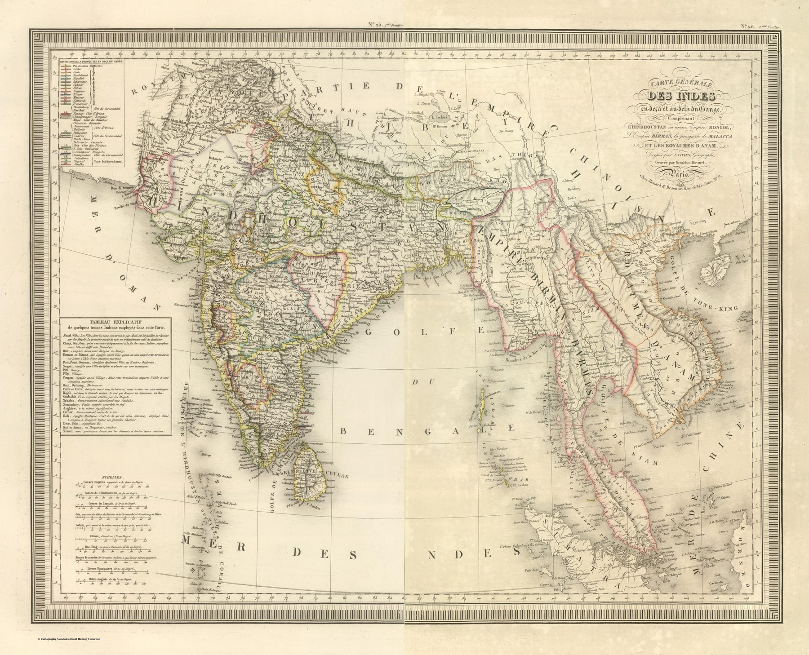

Two sheets, one learned geography
The map was engraved by Giraldon-Bovinet in two sheets, each dated 1825, and appeared in Vivien’s Atlas Universel of 1827. The composite extends from the Indian subcontinent through Burma, the Malay Peninsula and the kingdoms of Annam, combining hachured relief and outline colour at about 1:9,500,000.
Old categories, new information
The full title retains ‘the Indies on this side and beyond the Ganges’ and describes Hindoustan as the former Mughal Empire. These inherited categories coexist with a substantially updated geography, and the map demonstrates how a conceptual frame can survive while the detail within it changes.
A parallel French tradition
British survey dominated the production of new territorial knowledge in India, but it did not monopolise its interpretation. Vivien reorganised available information within a French academic atlas intended to serve both ancient and modern history.
The gaze
Paris in 1825 could still draw India at the scale of the whole Indies and find the result natural. The composite runs on past Burma to Annam because the category demanded it, and the British measurements inside the subcontinent sit within a frame that a reader of Ptolemy would recognise. An atlas meant to serve ancient history as well as modern had reasons to keep it.